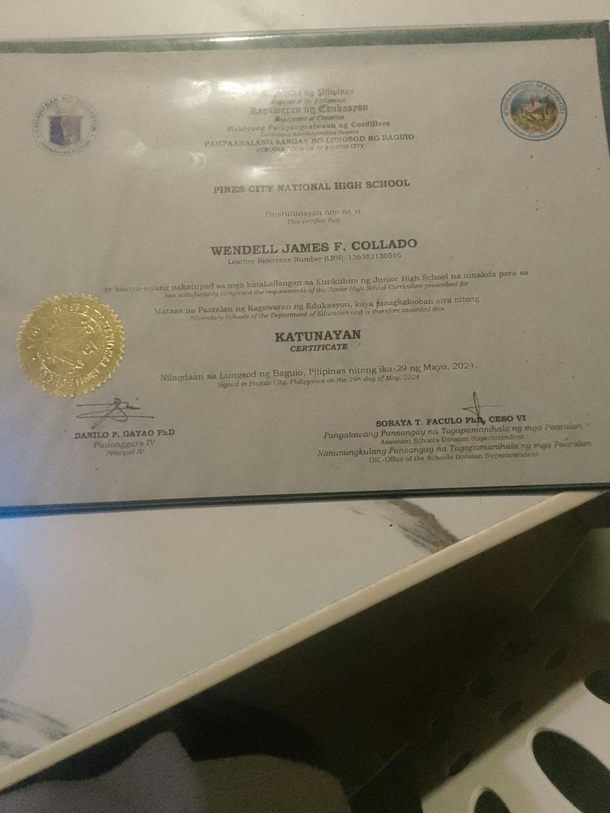
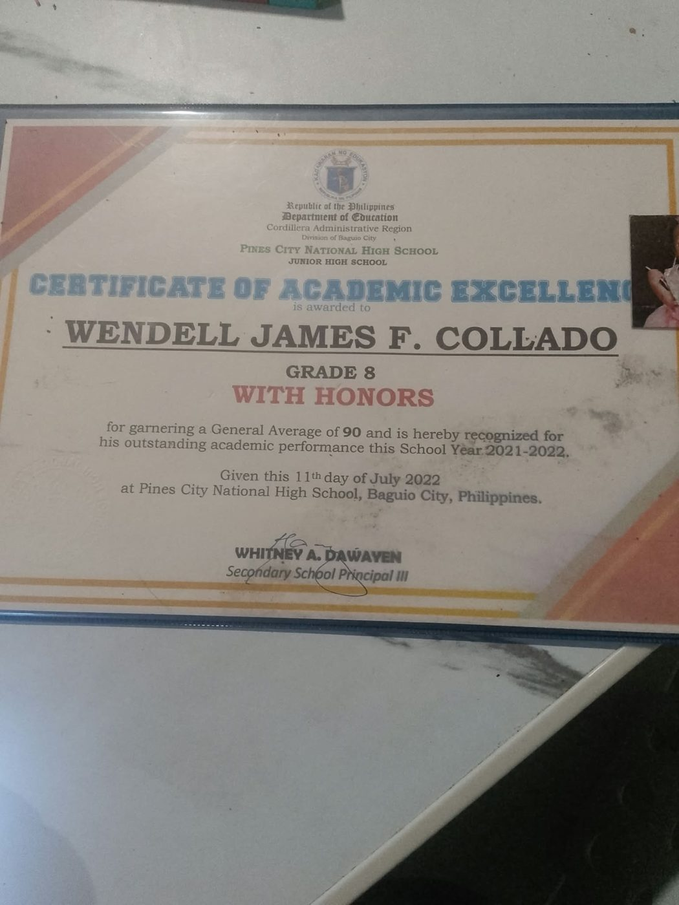
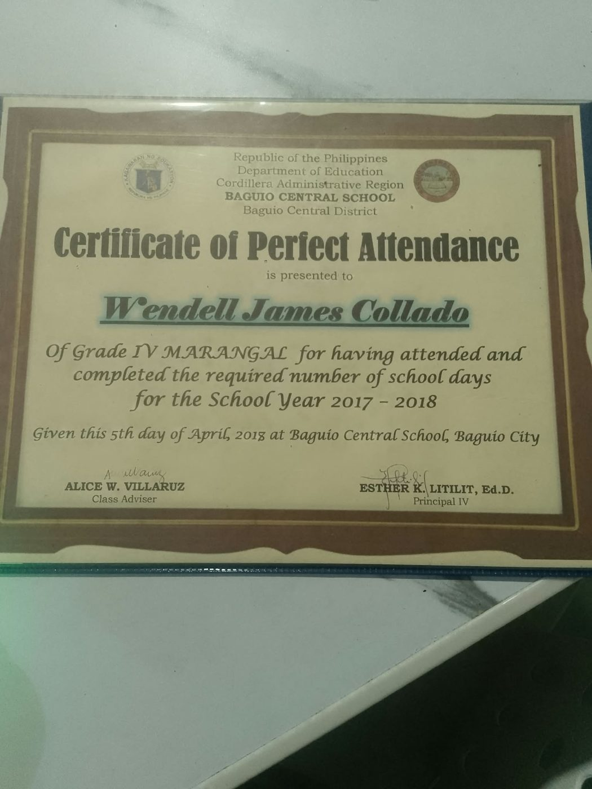
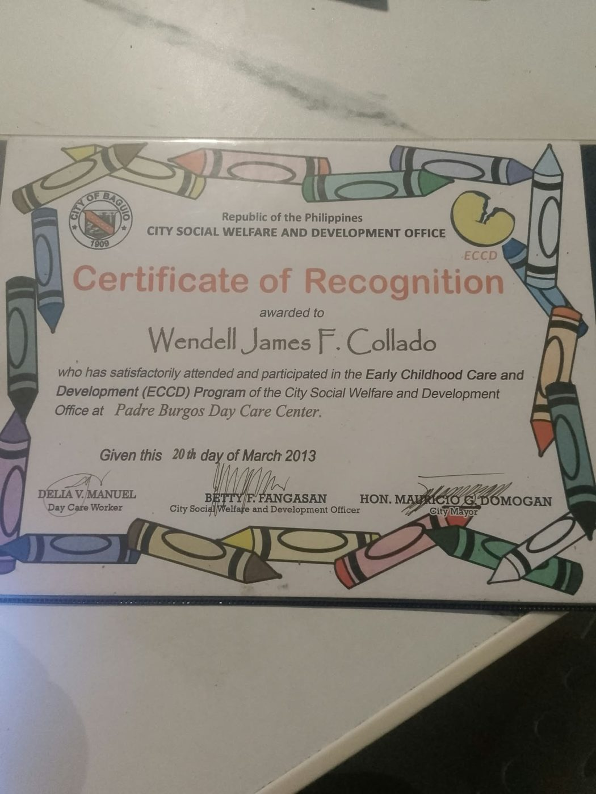
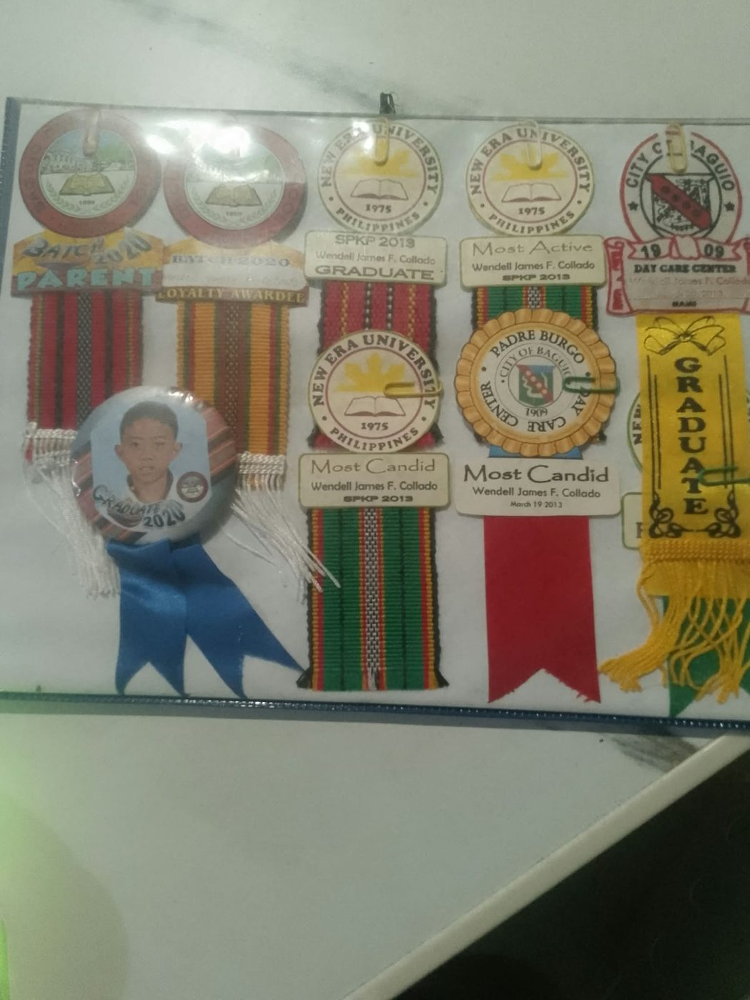

> achievements
My Achievements
Things I'm proud of from high school. I'm just getting started.
MARCH 31, 2026 · PINES CITY NATIONAL HIGH SCHOOLSenior High School GraduateCompleted all requirements for graduation and received my diploma.
2026 · TVL TRACKICT (Animation)Finished the Technical-Vocational-Livelihood track in Information and Communication Technology, Animation.
MAY 29, 2024 · PINES CITY NATIONAL HIGH SCHOOLJunior High School GraduateReceived the Katunayan Certificate for completing the Junior High School curriculum.
JULY 11, 2022 · PINES CITY NATIONAL HIGH SCHOOLAcademic Excellence, With HonorsGrade 8, School Year 2021-2022. Recognized for a General Average of 90.
PINES CITY NATIONAL HIGH SCHOOLLoyalty AwardeeReceived the Loyalty Awardee ribbon at graduation.
PINES CITY NATIONAL HIGH SCHOOLMedal RecipientReceived a medal from my school.
APRIL 16, 2020 · BAGUIO CENTRAL SCHOOLElementary GraduateReceived the Katunayan Certificate for completing the Elementary curriculum. Also earned a Loyalty Awardee ribbon and a Graduate 2020 pin (Batch 2020).
APRIL 5, 2018 · BAGUIO CENTRAL SCHOOLCertificate of Perfect AttendanceGrade IV Maranggal, School Year 2017-2018. Completed the required number of school days.
MARCH 20, 2013 · PADRE BURGOS DAY CARE CENTERCertificate of RecognitionAttended and participated in the Early Childhood Care and Development (ECCD) Program of the City Social Welfare and Development Office, Baguio.
MARCH 2013 · DAY CARE · SPKP 2013Most Candid, Most Active and GraduateEarned medals for Most Candid, Most Active and Graduate when I finished day care.
> certificates_and_medals






